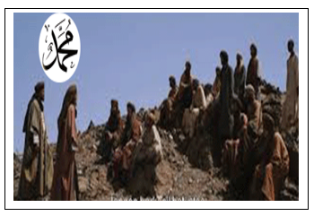
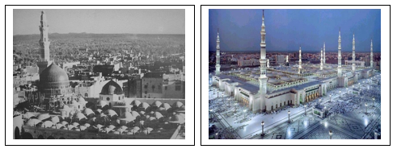
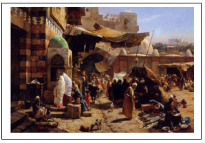
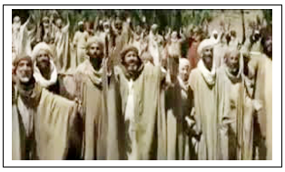
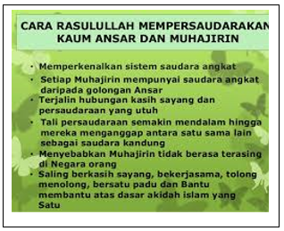
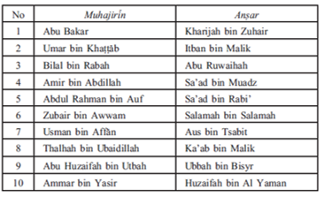
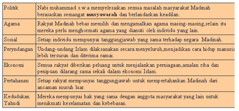

|
|
Perjuangan Nabi Muhammad SAW di Madinah  Selain itu, Rasulullah SAW dibantu oleh para sahabatnya melakukan usaha-usaha nyata agar terwujud
persaudaraan sesama umat Islam dan terbentuk masyarakat madani di Madinah. Sedangkan dakwah
yang ditujukan kepada orang-orang yang belum masuk Islam bertujuan agar mereka bersedia menerima Islam
sebagai agamanya, mempelajari ajaran-ajarannya dan mengamalkannya, sehingga mereka menjadi umat Islam
yang senantiasa beriman dan beramal saleh, yang berbahagia di dunia serta sejahtera di akhirat. 1. Membangun masjid sebagai pusat ibadah dan dakwah Membangun masjid ini merupakan usaha pertama Nabi Muhammad SAW dalam membentuk masyarakat Islam Madinah. Masjid yang pertama dibangun Nabi di Madinah adalah masjid Nabawi yang dibangun pada bulan Rabiulawal 1 Hijriah (September 622 SM). Fungsi masjid di zaman Rosulullah SAW adalah sebagai berikut : 
2. Membangun ekonomi rakyat dengan membangun pasar yang tidak jauh dari masjid. Untuk membangun perekonomian rakyat sekaligus sebagai sarana dalam menyebarkan ajaran Islam, Nabi Muhammad SAW dan para sahabat mendirikan pasar yang lokasinya tidak jauh dari masjid Nabawi. Pasar yang dibangun dimaksudkan sebagai langkah untuk mendidik umat bagaimana ajaran Islam mengatur roda perekonomian dengan begitu adilnya. Pasar tersebut telah merubah sistem pasar Yahudi yang ada pada saat itu. Dengan kehadiran pasar yang menganut sistem perekonomian Islam disambut hangat oleh masyarakat Madinah karena mampu menyuguhkan sistem perekonomian yang menguntungkan semua pihak, jauh dari riba dan keserakahan. Pasar Madinah inilah yang kemudian menjadi urat nadi perekonomian negara Islam yang pertama, yang berpusat di Madinah.  3.Mempersaudarakan Kaum Muhajirin dan Anshar Nabi Muhammad SAW dalam hijrahnya ke Madinah mempersaudarakan kaum Muhajirin dan kaum Anshar. Kaum Muhajirin adalah orang-orang Islam dari kota Mekkah yang juga ikut berhijrah ke Madinah bersama dengan Nabi Muhammad SAW , sedangkan kaum Anshar adalah kaum yang menerima kedatangan umat Islam di Madinah. Beliau mempersaudarakan kaum Muhajirin dan kaum Anshar agar mereka dapat saling membantu dan mengasihi satu sama lain. 
Kaum Muhajirin meninggalkan semua harta benda di kota Mekkah untuk hijrah bersama nabi ke Madinah sehingga sangat membutuhkan bantuan dari kaum Anshar untuk memulai hidup baru. Persaudaraan ini juga akan membentuk suatu solidaritas antara kedua kaum tersebut yang nantinya sangat penting bagi perjuangan umat Islam.  Nabi Muhammad SAW juga mempersaudarakan para sahabat dengan kaum Anshar antara lain:  4. Piagam Madinah Piagam Madinah ini merupakan produk Undang-undang hasil kompromi antara umat Islam dengan non-Muslim di Madinah, yang digunakan sebagai dasar hidup dan aturan yang harus dipatuhi bersama antar pihak yang terkait. Atas kesuksesan ini, Piagam Madinah dijadikan sebagai Dasar Toleransi Beragama. Inilah yang menginsipirasi umat Islam hari ini untuk tetap menjaga toleransi umat Beragama. 
|